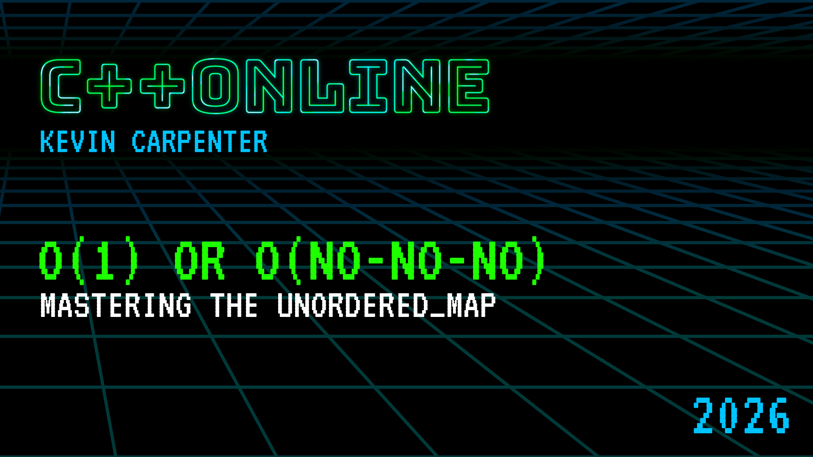
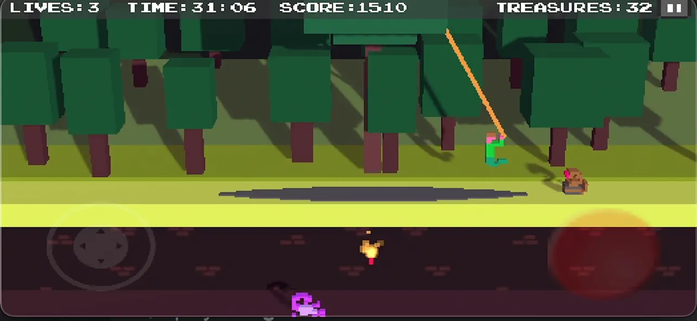

std::vector and std::mapThat's wrong.
std::vector is our default sequence container...std::unordered_mapThe #2 container in modern C++
| The Showdown | map vs unordered_map |
| Under the Hood | How a hash table really works |
| Three Pitfalls | Hashing, Collisions, Rehashing |
| Beyond | C++23 flat_map & heterogeneous lookup |
| Decision Tree | Your new framework |
map vs. unordered_mapstd::map — Red-Black TreeMichael Sambol — youtu.be/qvZGUFHWChY
Self-balancing rules:
✓ Each node: red or black
✓ Root & leaves (nil): black
✓ Red nodes → only black children
✓ All paths: same black node count
Result: O(log n) guaranteed
std::unordered_map — Hash Table
constexpr int N = 1'000'000;
using Map_t = std::map<std::string, uint32_t>;
using Hash_t = std::unordered_map<std::string, uint32_t>;
Map_t ordered;
Hash_t unordered;
for (int i = 0; i < N; ++i) {
std::string txn_id = "TXN" + std::to_string(i);
ordered[txn_id] = i * 100; // amount in cents
unordered[txn_id] = i * 100;
}
// Benchmark: look up all N keys
auto start = high_resolution_clock::now();
for (int i = 0; i < N; ++i) {
std::string key = "TXN" + std::to_string(i);
volatile auto it = ordered.find(key);
}
auto map_time = high_resolution_clock::now() - start;
src/02_benchmark_simple_txn.cpp
| Auth Count | std::map (ns) | unordered_map (ns) | Speedup |
|---|---|---|---|
| 1,000 | ~50 | ~18 | 2.9x |
| 10,000 | ~78 | ~19 | 4.1x |
| 100,000 | ~112 | ~20 | 5.5x |
| 1,000,000 | ~157 | ~22 | 7.0x |
| 10,000,000 | ~203 | ~23 | 8.8x |
src/01_benchmark_map_vs_unordered_txn.cpp
Time (ns)
200 │ ╭── std::map O(log n)
│ ╭─────╯
150 │ ╭─────╯
│ ╭─────╯
100 │ ╭─────╯
│ ╭─────╯
50 │╭─────╯
│───────────────────────────────────── std::unordered_map O(1)
0 └──────────────────────────────────────
1K 10K 100K 1M 10M
Container Size
map lookup isAt 10,000 TPS, milliseconds become seconds become SLA breaches.
std::unordered_map really worksStep 1: Key → std::hash → size_t
Step 2: Hash → hash % bucket_count() → Bucket Index
Step 3: Bucket → Linear scan → Data
std::string mid = "MID_100001"; // Merchant ID
size_t hash = std::hash<std::string>{}(mid);
size_t bucket = hash % merchant_cache.bucket_count();
"MID_100001" → hash: 14923847561023 → bucket: 3
"MID_200045" → hash: 82736451928374 → bucket: 7
src/03_under_the_hood_txn.cpp
std::vector<std::pair<std::string, std::string>> merchants = {
{"MID_100001", "AMAZON WEB SERVICES"},
{"MID_200045", "WALMART STORE 3291"},
{"MID_300078", "SHELL GAS STATION"},
{"MID_400012", "STARBUCKS CORP"},
{"MID_500099", "UNITED AIRLINES"},
{"MID_600023", "TARGET STORE 1482"}
};
MID = Merchant ID
A unique identifier for each merchant (business) in the acquirer's network.
src/03_under_the_hood_txn.cpp lines 34-44
std::cout << "Size: " << u_map.size();
std::cout << "Bucket count: " << u_map.bucket_count();
std::cout << "Load factor: " << u_map.load_factor();
std::cout << "Max load factor: " << u_map.max_load_factor();
Bucket 0: []
Bucket 1: ["MID_300078"]
Bucket 2: []
Bucket 3: ["MID_100001"] → ["MID_500099"]
Bucket 4: []
Bucket 5: ["MID_200045"]
src/03_under_the_hood_txn.cpp
Bucket 3 (head of linked list):
"MID_100001" →
"MID_500099" →
null
Each bucket is the head of a linked list.
When two keys hash to the same bucket, they get chained.
load_factor = size() / bucket_count()
When load_factor > max_load_factor (default: 1.0)

Pitfall 1: The Bad Hash
Pitfall 2: The Collision Catastrophe
Pitfall 3: The Hidden Rehash
You need to hash a custom struct.
What could go wrong?
struct Transaction {
std::string merchant_id;
std::string card_bin;
uint32_t amount_cents;
std::string currency;
bool operator==(const Transaction& other) const {
return merchant_id == other.merchant_id
&& card_bin == other.card_bin
&& amount_cents == other.amount_cents
&& currency == other.currency;
}
};
src/04_pitfall1_bad_hash_txn.cpp
struct BadHash {
size_t operator()(
const Transaction& t) const {
return std::hash<std::string>{}
(t.currency);
}
};
// Only hashes currency
// 99% "USD" → collision!
struct GoodHash {
size_t operator()(
const Transaction& t) const {
size_t seed = 0;
// Combine ALL fields:
seed ^= hash(t.merchant_id);
seed ^= hash(t.card_bin);
seed ^= hash(t.amount_cents);
seed ^= hash(t.currency);
return seed;
}
};
src/04_pitfall1_bad_hash_txn.cpp
Cost
More fields = more computation per lookup. If one field is already unique, hashing the rest is wasted work.
Semantics
Your hash must match operator==. Only hash the fields that define identity.
Mutability
Never hash a field that can change after insertion — find() will look in the wrong bucket.
hash_combine
template <typename T>
void hash_combine(size_t& seed, const T& val) {
const size_t GOLDEN = 0x9e3779b9;
seed ^= std::hash<T>{}(val) + GOLDEN
+ (seed << 6) + (seed >> 2);
}
template <typename... Args>
inline size_t hash_values(const Args&... args) {
size_t seed = 0;
(hash_combine(seed, args), ...); // C++17 fold expression
return seed;
}
struct TransactionHash {
size_t operator()(const Transaction& t) const {
return hash_values(
t.merchant_id, t.card_bin, t.amount_cents,
t.currency, t.timestamp_ms);
}
};
std::unordered_map<Transaction, std::string, TransactionHash> auth_cache;
src/05_pitfall1_hash_combine_txn.cpp
What happens when every key hashes to the same bucket?
struct TerribleAuthHash {
size_t operator()(const std::string&) const {
return 42; // Every auth code goes to bucket 42
}
};
using IntMap_t = std::map<std::string, uint32_t>;
using GoodHash_t = std::unordered_map<
std::string, uint32_t>;
using BadHash_t = std::unordered_map<
std::string, uint32_t, TerribleAuthHash>;
IntMap_t ordered;
GoodHash_t good_hash;
BadHash_t bad_hash;
src/06_pitfall2_collision_catastrophe_txn.cpp
| Auths | std::map | unordered (good) | unordered (bad) |
|---|---|---|---|
| 100 | 0.01 ms | 0.00 ms | 0.03 ms |
| 500 | 0.04 ms | 0.01 ms | 0.62 ms |
| 1,000 | 0.09 ms | 0.02 ms | 2.41 ms |
| 2,000 | 0.21 ms | 0.05 ms | 9.84 ms |
| 5,000 | 0.58 ms | 0.12 ms | 61.20 ms |
src/06_pitfall2_collision_catastrophe_txn.cpp
unordered_map degrades to O(n)
which is worse than map's O(log n)
What happens when the table gets too full?
150 TPS x 60 minutes = 540,000 authorizations
Auth # Time (us) Buckets Load Factor Event
0 0.3 2 0.50 ** REHASH **
97 3.5 197 0.50 ** REHASH **
797 15.0 1597 0.50 ** REHASH **
...
25717 382.5 51437 0.50 ** REHASH **
51437 788.1 102877 0.50 ** REHASH **
102877 1356.5 205759 0.50 ** REHASH **
205759 3087.2 411527 0.50 ** REHASH **
411527 7781.9 823117 0.50 ** REHASH **
src/07_pitfall3_rehash_txn.cpp
reserve()| Without reserve() | With reserve() | |
|---|---|---|
| Avg insert time | 0.10 us | 0.04 us |
| Max insert time | 9259.04 us | 17.21 us |
| Rehash events | 19 | 0 |
std::unordered_map<std::string, uint32_t> auth_cache;
// One line. Zero rehashes.
auth_cache.reserve(expected_auth_count);
src/08_pitfall3_reserve_fix_txn.cpp
unordered_mapstd::flat_map (C++23)
#include <flat_map>
using BinTable_t = std::flat_map<
std::string, BinInfo>;
BinTable_t bin_table;
bin_table["411111"] = {"CHASE", "VISA"};
auto it = bin_table.find("411111");
std::vectors (contiguous memory)std::map meets std::vectorsrc/09_cpp23_flat_map_txn.cpp
| Container | Iteration Time | Notes |
|---|---|---|
std::flat_map |
2.75 ms | Contiguous memory, cache-friendly |
std::map |
5.96 ms | Node-based, pointer chasing |
std::unordered_map |
18.48 ms | Scattered buckets, worst iteration |
Loaded once at startup, queried millions of times per day
src/09_cpp23_flat_map_txn.cpp
struct StringHash {
using is_transparent = void; // Magic marker!
size_t operator()(std::string_view sv) const {
return std::hash<std::string_view>{}(sv);
}
size_t operator()(const std::string& s) const {
return std::hash<std::string>{}(s);
}
};
struct StringEqual {
using is_transparent = void;
bool operator()(std::string_view a, std::string_view b) const {
return a == b;
}
};
src/10_cpp20_heterogeneous_lookup_txn.cpp
std::unordered_map<std::string, MerchantInfo,
StringHash, StringEqual> cache;
// Traditional: allocates temporary std::string every time
auto it = cache.find(std::string(sv_from_iso_message));
// Transparent: zero allocation!
auto it = cache.find(sv_from_iso_message); // Direct!
src/10_cpp20_heterogeneous_lookup_txn.cpp
| Method | Time | Allocations |
|---|---|---|
Traditional find(std::string(sv)) |
3.54 ms | 540,000 |
Transparent find(sv) |
2.57 ms | 0 |
150 TPS × 60 min = 540,000 lookups/hour
src/10_cpp20_heterogeneous_lookup_txn.cpp
std::map
using AuthCache_t = std::unordered_map<
std::string, AuthRecord>;
AuthCache_t auth_cache;
auth_cache["TXN_0001"] = {"AUTH_A1B2", 5000};
AuthRecord* ptr = &auth_cache["TXN_0001"];
// New auths flood in, triggering rehash...
for (int i = 3; i < 20; ++i)
auth_cache["TXN_" + std::to_string(i)] = { /* ... */ };
// pending_reversal is NOW DANGLING!
unordered_map: rehash invalidates ALL pointers/iterators
std::map: insertion NEVER invalidates existing references
src/11_iterator_stability_txn.cpp
std::vector is your default sequence.
std::unordered_map is your default associative container.
It is O(1) fast but O(n) dangerous.
1. Bad Hashes → use hash_combine
2. Collisions → hash ALL fields
3. Rehashing → call reserve()
Need to store items?
├── Sequence? ──────────────────────── std::vector (done)
└── Key-Value?
├── Need sorted order? ──YES──── std::map
├── Need reference stability? ── std::map
└── Otherwise ──────────────────── std::unordered_map
├── Custom key? ──── Write a good hash (hash_combine)
└── Know the size? ── Call reserve()
src/12_decision_framework_txn.cpp
std::map "just in case."Start with std::unordered_map.
Understand its pitfalls.
Write faster, more modern C++.